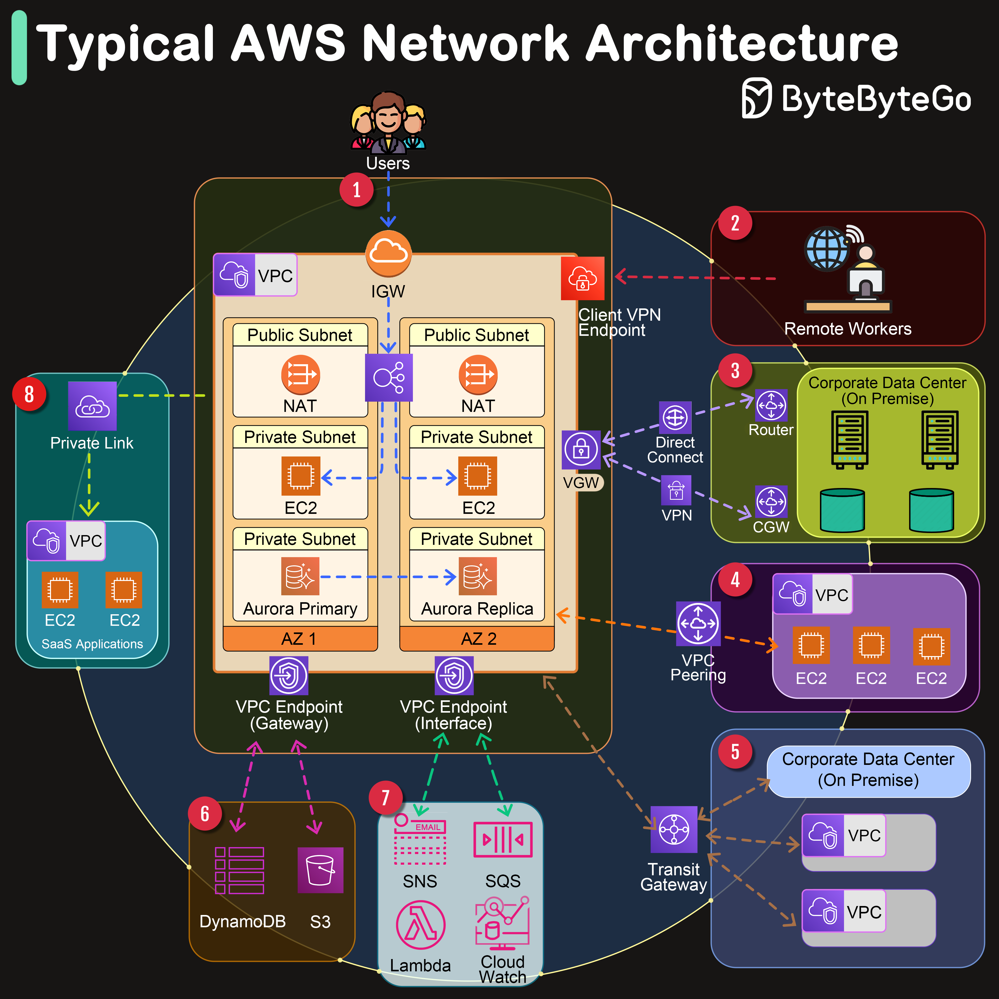

Amazon Web Services (AWS) offers a comprehensive suite of networking services designed to provide businesses with secure, scalable, and highly available network infrastructure. AWS’s network architecture components enable seamless connectivity between the internet, remote workers, corporate data centers, and within the AWS ecosystem itself.
VPC (Virtual Private Cloud)
At the heart of AWS’s networking services is the Amazon VPC, which allows users to provision a logically isolated section of the AWS Cloud. Within this isolated environment, users can launch AWS resources in a virtual network that they define.
AZ (Availability Zone)
An AZ in AWS refers to one or more discrete data centers with redundant power, networking, and connectivity in an AWS Region.
Now let’s go through the network connectivity one by one:
An IGW serves as the doorway between your AWS VPC and the internet, facilitating bidirectional communication.
AWS offers a Client VPN service that enables remote workers to access AWS resources or an on-premises network securely over the internet. It provides a secure and easy-to-manage VPN solution.
A VGW is the VPN concentrator on the Amazon side of the Site-to-Site VPN connection between your network and your VPC.
VPC Peering allows you to connect two VPCs, enabling you to route traffic between them using private IPv4 or IPv6 addresses.
AWS Transit Gateway acts as a network transit hub, enabling you to connect multiple VPCs, VPNs, and AWS accounts together.
A VPC Endpoint (Gateway type) allows you to privately connect your VPC to supported AWS services and VPC endpoint services powered by PrivateLink without requiring an internet gateway, VPN.
An Interface VPC Endpoint (powered by AWS PrivateLink) enables private connections between your VPC and supported AWS services, other VPCs, or AWS Marketplace services, without requiring an IGW, VGW, or NAT device.
AWS PrivateLink provides private connectivity between VPCs and services hosted on AWS or on-premises, ideal for accessing SaaS applications securely.